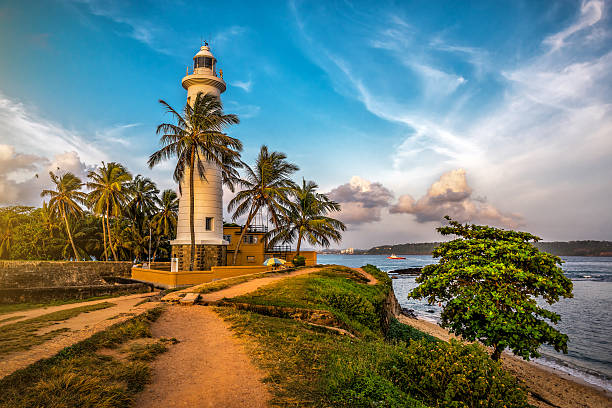
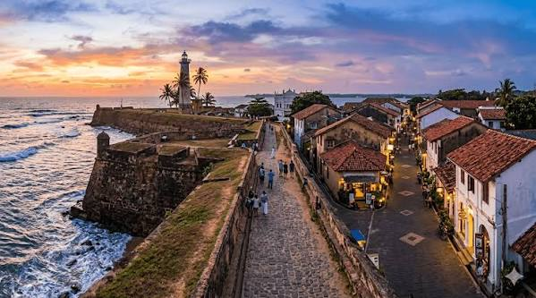
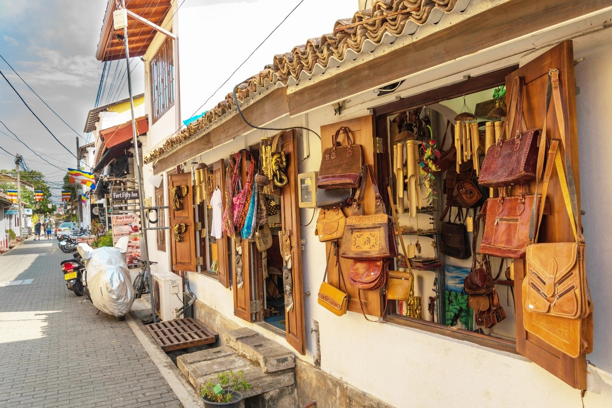
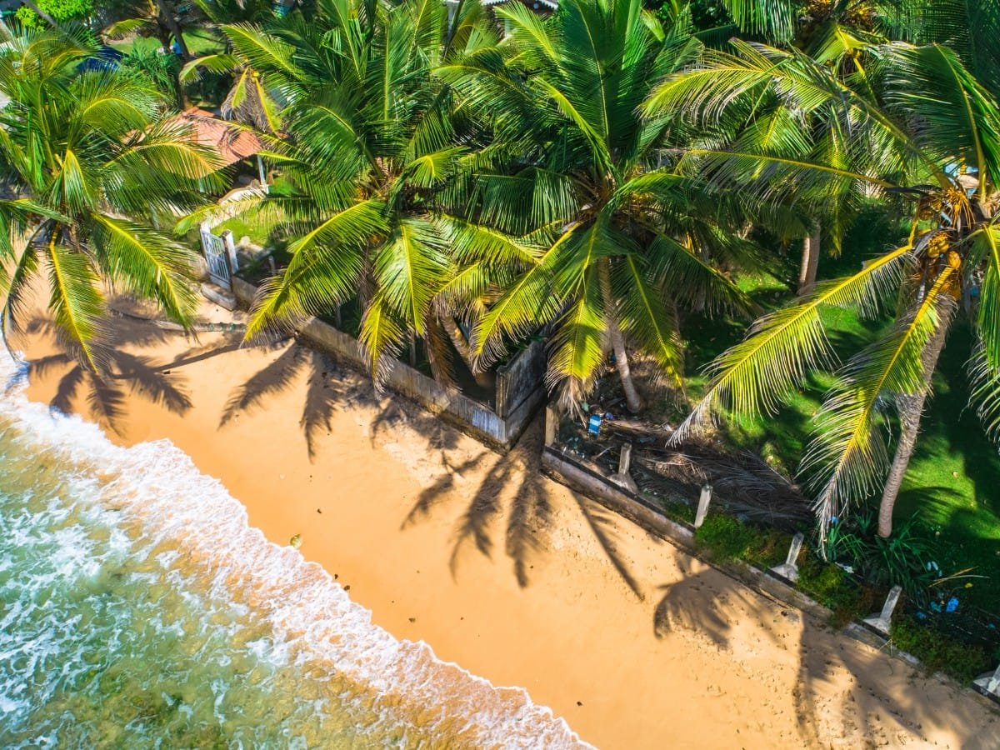
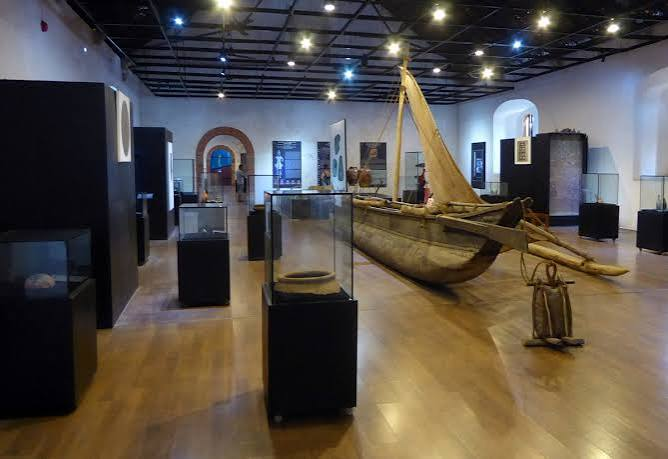
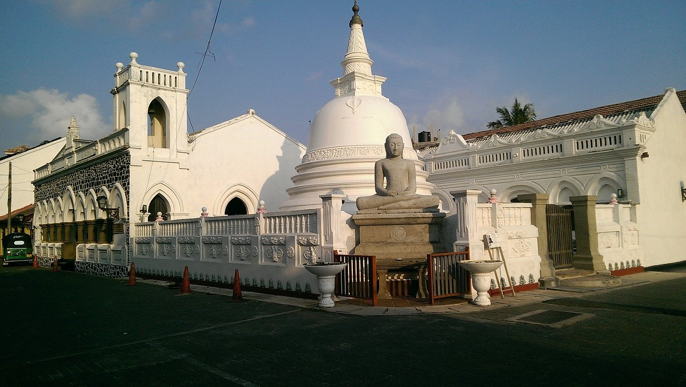
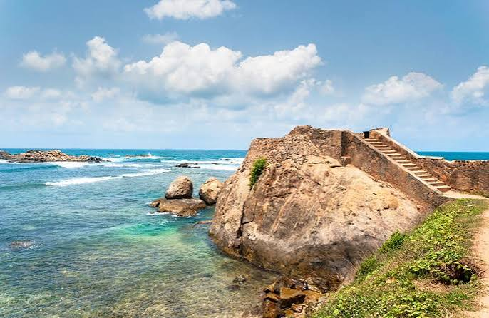
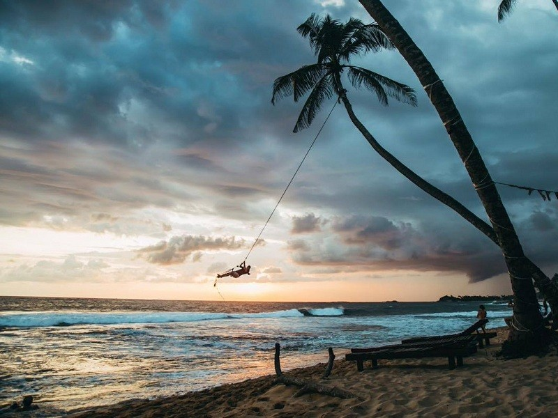
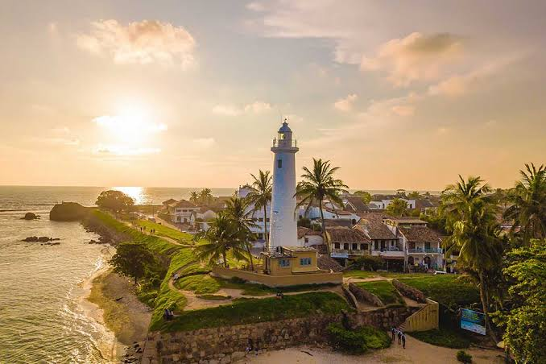

01 / LANDMARKGalle Lighthouse
An iconic beacon standing watch over the Indian Ocean.
↗SRI LANKA · SOUTHERN PROVINCE
Wander through centuries of history, discover hidden courtyards and let the rhythm of the Indian Ocean guide you.
Step inside a living heritage, where every lane has a story and every sunset feels like a memory.
Galle Fort is a remarkable coastal town shaped by centuries of trade and cultural exchange. Its cobbled streets, colonial-era buildings, ocean-facing ramparts and vibrant local life create a destination unlike any other.
GET TO KNOW GALLE ↗CURATED FOR THE CURIOUS
From iconic landmarks to quiet corners, explore the experiences that make this coastal town unforgettable.

01 / LANDMARKAn iconic beacon standing watch over the Indian Ocean.
↗
02 / HERITAGEFollow the old fort walls for ocean views and golden sunsets.
↗
03 / CULTUREExplore charming lanes, architecture, galleries and cafés.
↗
04 / COASTALPause by the sea and enjoy the changing colours of the coast.
↗
05 / CULTUREDiscover the seafaring stories that shaped this historic port.
↗
06 / ARCHITECTUREAdmire the details and stories held in centuries-old buildings.
↗MAKE YOURSELF AT HOME
Wake up to heritage charm, slow mornings and the warm hospitality of the southern coast. Find a stay that suits your journey.
CURATED JOURNEYS
Hand-crafted routes from local experts — follow at your own pace or book a private guide.
Lighthouse → Ramparts → Dutch Reformed Church → Old Town lanes, with a licensed guide.
Enquire ↗Morning fort walk, afternoon at Unawatuna, sunset on the ramparts with high tea.
Enquire ↗Boutique stay, curated dining, private tuk-tuk, and a Galle Fort photography session.
Enquire ↗SLOW DOWN. LOOK CLOSER.
The best moments are often the simplest. Choose your own way to experience Galle.
Take an unhurried walk through the fort's streets and discover its layered heritage.
Find a spot along the ramparts and watch the sun sink into the Indian Ocean.
Explore Sri Lankan flavours, relaxed cafés and memorable dining experiences.
Browse independent boutiques, handmade crafts and thoughtful souvenirs.
TRUSTED BY TRAVELLERS
"The heritage walk was the highlight of our Sri Lanka trip. Our guide knew every hidden courtyard."
— Anya R., Germany ★★★★★
"Booked the Slow South itinerary — seamless from arrival to departure. Felt like locals by day two."
— Marcus T., Australia ★★★★★
"A stunning, respectful introduction to Galle Fort. The sunset ramparts walk is unmissable."
— Priya S., India ★★★★★
NOTES FROM THE FORT
Useful tips for a more thoughtful visit to Galle Fort.
Early mornings and late afternoons are lovely for exploring on foot.
The historic fort area is best explored at a relaxed walking pace.
Respect local residents, heritage buildings and the surrounding environment.
A GLIMPSE OF GALLE
A collection of textures, colours and moments from the southern coast.



LET THE JOURNEY BEGIN
Planning a visit or looking for more information? Send us a message and we'll be happy to help.